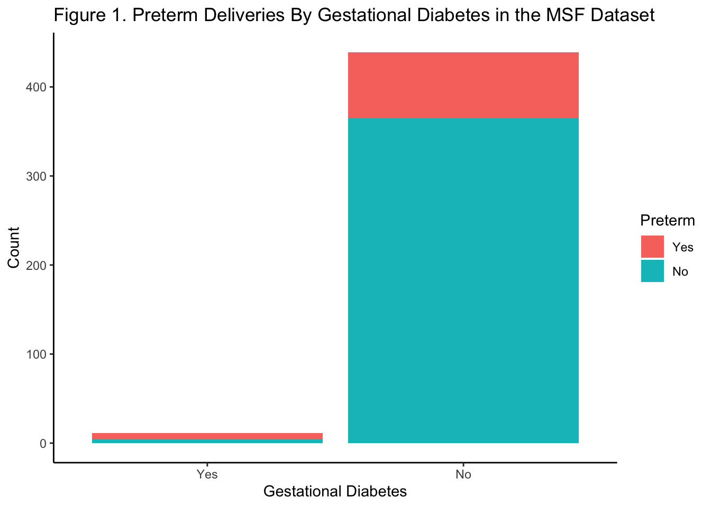
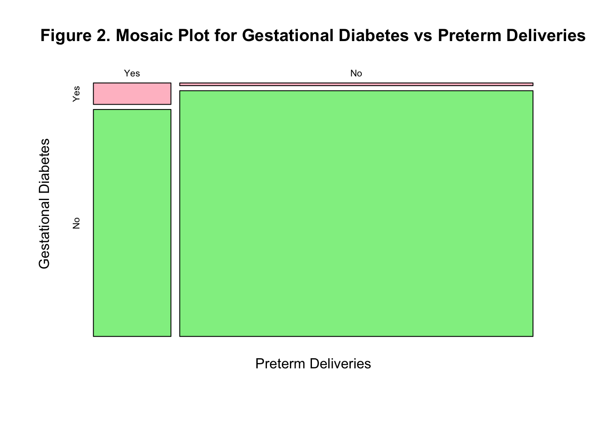
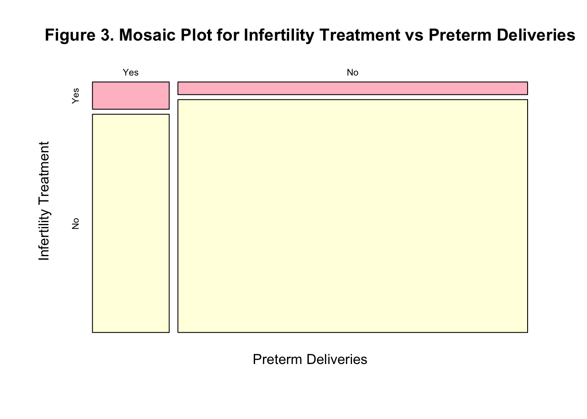
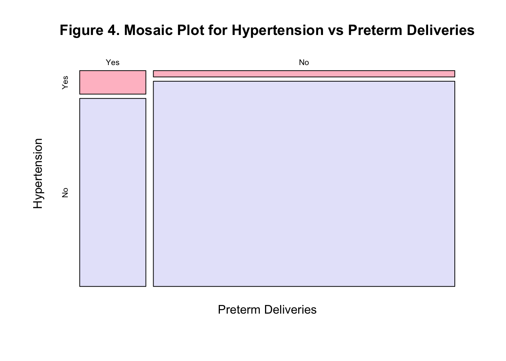

The Mother’s Significant Feature (MSF) dataset contains data collected from 450 mothers from the Mumbai metropolitan region in Maharashtra, India interviewed after childbirth between February 2018 to March 2021.1 It is composed of 130 variables (i.e. attributes) that cover a range of descriptive to health-related outcomes for mothers and fathers across 6 Excel spreadsheets. The dataset was designed to provide data for researchers to conduct analyses that will contribute to improved reproductive and health outcomes among mothers, fathers, and children. It consists of common factors and health outcomes experienced across the following three major reproductive phases relevant to this population: late adolescence, post-marriage, and during pregnancy. The 130 attributes were selected based on literature reviews and brainstorming sessions with gynecologists and pediatricians. They are organized into the following main five categories: physical, social, lifestyle, stress levels, and health outcomes. Each of the 450 mothers included in the dataset were assigned a unique ID number included in the “Mother_UID” variable which will be used to merge relevant csv files.
Preterm deliveries are the leading cause of death in children under 5 years across the world, with approximately 20% of the 15 million babies born preterm globally occurring in India.2 Studies have shown that preterm delivery is less common among women with good glycemic control.3 Moreover, observational studies have corroborated that risks for preterm delivery are multifactorial and cannot be deduced to solely biological mechanisms. Given the inherent need to identify factors that may be associated with higher odds of preterm deliveries, the main objective of this project was to assess the association between preterm deliveries and gestational diabetes, infertility treatment, and hypertension during pregnancy.
I created a figure and table to illustrate my exploratory data analysis titled:
All figures and tables will be described in the results section and can be found in the Appendix (along with code).
To assess whether there are significant associations between the respective binary variables, Fisher’s Exact and Chi-Square association tests were conducted along with odds ratios and confidence intervals. These tests were warranted because 1) each of the three respective pairs of associations were binary, 2) all 450 mothers in the dataset are independent observations, and 3) cells in the 2x2 contingency tables are mutually exclusive. The Chi-Square test of independence assumes that the expected values for each cell in 2x2 contingency tables are 5 or greater. This assumption was not met for 2 of the associations of interest. Despite the sum of the rows and columns not being fixed and following a hypergeometric distribution, a Fisher’s Exact test was performed because applying the approximation method from a Chi-squared test was not appropriate. Statistical theory states that for large enough 2x2 cellentries, the log of the odds ratio is approximately normal and a confidence interval can be constructed. Although the overall sample size of 450 is large, multiple cell values in the contingency table are smaller than 10 so asymptotics may not hold. Because of the small cell sizes, confidence intervals are expected to be wide.
Extensive data wrangling was necessary to conduct this analysis because the Mother’s Significant Feature dataset was organized across Excel sheets. Moreover, in order to make my analyses simpler I narrowed the dataset from over 325 variables to 13. In order to merge csv files to have all the variables of interest in a single tidy data frame, two datasets were cleaned by renaming columns, removing noninformative rows, and subsetting to only relevant columns. The csv files were merged according to each unique mother’s ID included in every Excel sheet. I reached out to Luli who approved that these steps would be considered extensive wrangling. The first 6 rows using head() function for the ‘msf_original’ and ‘msf_diab_hyp’ datasets show relevant parts of the datasets that required cleaning. The ‘msf_4_final’ dataset is the final dataset that was used for analyses.
To illustrate my exploratory data analysis, I created a table and figure with gestational diabetes as the predictor of preterm deliveries. Table 1 summarizes continuous and categorical demographic and health variables among mothers with and without gestational diabetes. There were a total of 11 and 439 with and without gestational diabetes in the study population. Women with gestational diabetes were on average older (28.6 years vs 26.6 years) and had a higher BMI (25.7 vs 23.2) than women without gestational diabetes. The family income and education variables are non-informative in this example because a codebook describing what each discrete category represents is not publicly available online. The variables were kept in the Table because these are potential confounders that one would want to adjust for in adjusted analyses such a binomial generalized linear model. Interestingly, all women with gestational diabetes did not have hypertension while a greater percentage reported a preterm delivery (63.6%) compared to no preterm delivery (36.4%). Among women with gestational diabetes, 81.8% reported no history of infertility treatment.
To highlight one of the predictor-outcome associations, Figure 1 was created to show the number of preterm deliveries by gestational diabetes in a stacked barplot. Table 1 and Figure 1 show that the percentage of preterm deliveries among women with gestational diabetes (63.6%) was greater than the percentage of preterm deliveries observed among women without gestational diabetes (16.9%). These visualizations indicate that the presence of gestational diabetes may be associated with preterm deliveries.
Each of the associations of interest are summarized in 2x2 contingency tables. Table 2 shows the observed occurrences in each of the four cells for preterm deliveries and gestational diabetes with column percentages. Similar information is presented in Figure 2 in a Mosaic plot which shows each combination of variables represented by a rectangle. The size of the rectangle is proportional to the number of individuals in that combination compared to the total study population. For instance, the majority of mothers in this study population that do not have gestational diabetes also do not report delivering a baby preterm. Since this association did not meet the expected cell counts assumption needed to run a Chi-squared test of independence, Fisher’s Exact test was conducted. According to a p-value less than 0.001, we reject the null hypothesis and conclude there is a statistically significant association between gestational diabetes and preterm delivery. The calculated odds ratio from this study population indicates that the odds of preterm delivery among women with gestational diabetes is 8.57 times the odds of preterm delivery among mothers without gestational diabetes (95% CI: 2.12, 40.99). Because of the high variability from the limited observations of gestational diabetes, the estimated confidence interval is not precise.
Table 3 shows the observed occurrences in each of the four cells for preterm deliveries and infertility treatment with column percentages. Unlike Table 2, there is a greater percentage of women without preterm deliveries (67.9 and 82.9%) than preterm deliveries among mothers with and without infertility treatment. Nonetheless, the percentage of mothers with a preterm birth is greater among mothers with infertility treatment (32.1%) compared to mothers without infertility treatment (17.1%). The Mosaic Plot in Figure 3 shows that the majority of mothers in this study population do not report either infertility treatment or preterm delivery. Since each of the expected cell counts for infertility treatment and preterm delivery are 5 or above, a Chi-squared test for independence was performed. Based on a p-value of 0.079, we conclude there is no sufficient evidence for an association between infertility treatment and preterm delivery. The estimated odds ratio from this study population indicates that the odds of preterm delivery among mothers with infertility treatment is 2.30 times the odds of preterm delivery among mothers without infertility treatment (95% CI: 0.88, 5.59).
Table 4 shows the observed occurrences in each of the four cells for preterm deliveries and hypertension during pregnancy with column percentages. The majority of mothers without hypertension do not report a preterm delivery (83.3%) while a large but not majority of mothers with hypertension report a preterm delivery (45.0%). The mosaic plot in Figure 4, shows that the majority of mothers in this study population did not deliver a baby preterm and do not have hypertension. Since each of the expected cell counts for hypertension and preterm delivery are not at least 5, a Fisher’s Exact test for independence was performed. Based on a p-value of 0.004, we conclude there is a statistically significant association between hypertension and preterm delivery.
The estimated odds ratio from this study population indicates that the odds of preterm delivery among mothers with hypertension is 4.05 times the odds of preterm delivery among mothers without hypertension (95% CI: 1.43, 11.20).
The purpose of this project was to conduct exploratory analyses using the Mother’s Significant Feature dataset and assess whether gestational diabetes, infertility treatment, and hypertension during pregnancy were associated with preterm deliveries among a study population of 450 mothers from the Mumbai metropolitan region in Maharashtra, India who gave birth between February 2018 to March 2021. Fisher’s Exact and Chi-squared test of independence were performed to identify the associations between the aforementioned pairs of binary variables. Odds ratios and 95% confidence intervals were estimated using the Fisher’s Exact test function in R. The study found increased odds of preterm deliveries for mothers with gestational diabetes, hypertension, and infertility treatment but the latter association was not statistically significant.
In light of the limited occurrences of gestational diabetes, hypertension, and infertility treatment history, I do not think my analysis was successful. Because of the large standard deviations from limited information in the dataset, the confidence intervals were wide. Moreover, my interpretation of the descriptive statistics in Table 1 were limited because there is no online codebook to determine what each of the discrete categories for variables with more than two categories mean. If I had more time, I would check for assumptions and perform adjusted logistic regression models to compare to the crude odds calculated in this project. All odds ratios were relatively high and likely biased upwards by common confounders like mother’s age, education, and income. Given that the counts for many of the categories for common demographic variables such as education and income were small, this analysis would require that I know how each categorical variable is coded to collapse categories.
1.Himani Deshpande, Leena Ragha. (2021). Mother’s Significant Feature (MSF) Dataset. IEEE Dataport. https://dx.doi.org/10.21227/kq5k-b784
2.India has 1/5th of the world’s preterm babies. (2019, June 13). Retrieved December 12, 2022, from Narayana Health Care website: https://www.narayanahealth.org/blog/india-has-1-5th-of-the-worlds-preterm-babies/
3.Fan, Z., Yang, H., Gao, X., Lintu, H., & Sun, W. (2006). Pregnancy outcome in gestational diabetes. International Journal of Gynecology & Obstetrics, 94(1), 12–16. https://doi.org/10.1016/j.ijgo.2006.03.021
#install.packages("kableExtra")
#load libraries
library(tidyverse)## ── Attaching packages ─────────────────────────────────────── tidyverse 1.3.2 ──
## ✔ ggplot2 3.4.0 ✔ purrr 0.3.5
## ✔ tibble 3.1.8 ✔ dplyr 1.0.10
## ✔ tidyr 1.2.1 ✔ stringr 1.4.1
## ✔ readr 2.1.3 ✔ forcats 0.5.2
## ── Conflicts ────────────────────────────────────────── tidyverse_conflicts() ──
## ✖ dplyr::filter() masks stats::filter()
## ✖ dplyr::lag() masks stats::lag()library(ggplot2)
library(dplyr)
library(boot)
#install.packages("table1")
require(table1)## Loading required package: table1
##
## Attaching package: 'table1'
##
## The following objects are masked from 'package:base':
##
## units, units<-library(devtools)## Loading required package: usethis#install_github("emwozniak/Table1")
#library(Table1)
#import MSF_Dataset_Complete_450 csv file to subset dataset to only the variables needed for this project
#main exposure of interest: gestational diabetes
#main outcome of interest: preterm deliveries
#potential confounders I will adjust for
#other interesting/relevant tvariables for exploratory analyses
msf_original <- read.csv("MSF_Dataset_Complete_450.csv")
#there are 455 observations and 325 variables in the original complete dataset
#Clean the csv file as needed as needed
#display all variables for the first 6 rows of the dataset
#head(msf_original)
#subset dataset to the following variables: Mother_UID, Age_of_Mother, BMI, Yrs_of_Marriage, Fertility_Treatment, Education, Family_Income, and Preterm
#notice the file is a bit messy and requires some cleaning
#Also NOTICE that hypertension and gestational diabetes are not identifiable in the 'Complete' dataset. I was unable to find a codesheet that tells me which colums belong to these variables. Since gestational dibaetes is the main exposure I will need to retrieve this variable from a separate csv file (along with hypertesnion) and merge both csv files together. I will do this after cleaning the 'complete' dataset
#some of the variables span multiple columns to represent different time phases. None of the aforementioned variables I will use in this project span more than one column. I will now clean the dataset as needed to create a wide format dataset with each row representing a single mother and each column representing a single variable. I will ultimately create a tidyverse dataframe to use tidyverse functions
#create second dataset to clean
msf_2 <- msf_original
#rename the column 'X' to 'Mother_UID'
colnames(msf_2)[colnames(msf_2) == "X"] = "Mother_UID"
#remame the 'X.76' column to 'Preterm'
colnames(msf_2)[colnames(msf_2) == "X.76"] = "Preterm"
#table(msf_2$Preterm)
#remame the 'Fertility_Treatment' column to 'Infertility_Treatment'
colnames(msf_2)[colnames(msf_2) == "Fertility_Treatment"] = "Infertility_Treatment"
#table(msf_2$Infertility_Treatment)
#subset to the following variables only: Mother_UID, Age_Of_Mother, BMI, Yrs_Of_Marriage, Fertility_Treatment, Education, Cigarette, Alcohol, Health.Conscious, Family_Income, and Preterm
myvars <- c("Mother_UID", "Preterm","Age_Of_Mother", "BMI", "Yrs_Of_Marriage", "Infertility_Treatment", "Education", "Family_Income")
msf_2 <- msf_2[myvars]
#Remove the first 5 rows
msf_2 <- msf_2[-c(1:5),]
#the dataset now has 450 observations and 8 variables. WOOOOHOOOO#NOW I will load in the MSF_Physical_and_health_Fetaures_450 dataset to retrieve the gestational diabetes and hypertension variables
msf_diab_hyp <- read.csv("MSF_Physical_and_health_Fetaures_450.csv")
#create dataset to clean
msf_3 <- msf_diab_hyp
#rename the column 'X' to 'Mother_UID'
colnames(msf_3)[colnames(msf_3) == "X"] = "Mother_UID"
#rename the column 'X.2' to 'Hypertension'
colnames(msf_3)[colnames(msf_3) == "X.2"] = "Hypertension"
#rename the column 'X.3' to 'Gest_Diabetes'
colnames(msf_3)[colnames(msf_3) == "X.3"] = "Gest_Diabetes"
#subset to the following variables only: Mother_UID, Gest_Diabetes, Hypertension
myvars2 <- c("Mother_UID", "Gest_Diabetes","Hypertension")
msf_3 <- msf_3[myvars2]
#Remove the first 5 rows
msf_3 <- msf_3[-c(1:5),]
#the dataset now has 450 observations and 3 variables. WOOOOHOOOO
#Merge msf_2 and msf_3 datasets which are both now in tidy format by 'Mother_UID'
msf_4_final <- full_join(msf_2, msf_3, by = "Mother_UID")
# the final dataset that will be used for analyses has 450 observations and 10 variables#Show relevant parts of the datasets before and after data cleaning
#before
head(msf_original)## X Age_Of_Mother weight_before_preg wt_before_delivery Height.cm. BMI
## 1 1 2 3 4 5
## 2 1 2 3 4 5
## 3 NA NA NA NA NA
## 4 NA NA NA NA NA
## 5 Mother_UID NA NA NA NA NA
## 6 1 29 59 60 156 25
## Hemoglobin PCOS Age_Father Yrs_Of_Marriage Fertility_Treatment Sibling
## 1 6.0 7 8 NA 9 NA
## 2 6.0 7 8 9 10 11
## 3 NA NA NA 1 NA 2
## 4 NA NA NA NA NA NA
## 5 NA NA NA NA NA NA
## 6 12.5 0 31 5 0 1
## No_of_sibling Education Miscarrage.History Exercise X.1 X.2 Laptop X.3 X.4
## 1 NA NA 10
## 2 12 13 14 15 16 17 18 19 20
## 3 3 4 NA 1 2
## 4 NA NA NA 1 2 2
## 5 NA NA NA a b c a b c
## 6 1 5 0 3 3 3 2 2 2
## Outside.Food X.5 X.6 Tea.Coffee X.7 X.8 Cigratte X.9 X.10 Alcohol X.11 X.12
## 1
## 2 21 22 23 24 25 26 27 28 29 30 31 32
## 3 3 4 5 6
## 4 3 3 4 4 5 5 6 6
## 5 a b c a b c a b c a b c
## 6 2 2 2 2 2 2 1 1 1 1 1 1
## NOISE.AIR.pollution X.13 X.14 Health.Concious X.15 X.16 Daily.Diet X.17 X.18
## 1 NA NA
## 2 33 34 35 36 37 38 39 40 41
## 3 7 8 NA NA
## 4 7 7 8 8 NA NA
## 5 a b c a b c a NA NA
## 6 2 2 2 3 3 3 1 1 1
## X.19 X.20 X.21 X.22 X.23 X.24 X.25 X.26 X.27 X.28 X.29 X.30 X.31 X.32 X.33
## 1 NA NA NA NA NA NA NA NA NA NA NA NA NA
## 2 42 43 44 45 46 47 48 49 50 51 52 53 54 55 56
## 3 NA NA NA NA 9 NA NA NA NA NA NA NA NA
## 4 NA NA NA NA NA NA NA NA NA NA NA NA NA
## 5 NA NA NA b NA NA NA NA NA c NA NA NA NA NA
## 6 1 1 1 1 1 1 1 1 1 1 1 1 1 1 1
## Cravings X.34 X.35 Hobbies X.36 X.37 X.38 X.39 X.40 X.41 Menstrual_Cycle X.42
## 1 11 12
## 2 57 58 59 60 61 62 63 64 65 66 67 68
## 3 10
## 4 9 11 12
## 5 a b c a b c d e f g a b
## 6 2 2 2 2 3 2 1 1 2 3 3 3
## Sleep_Pattern X.43 X.44 X.45 X.46 X.47 X.48 X.49 X.50 X.51 X.52 X.53 sunlight
## 1
## 2 69 70 71 72 73 74 75 76 77 78 79 80 81
## 3 11 12
## 4 13 13 13 14
## 5 a b c d a b c d a b c d a
## 6 0 1 0 0 0 1 0 0 0 1 0 0 3
## X.54 X.55 Travel_Time X.56 X.57 Travel_Mode X.58 X.59 Works_As X.60 Leave
## 1
## 2 82 83 84 85 86 87 88 89 90 91 92
## 3 13 14 15
## 4 15 16 17 18
## 5 b c a b c a b c a b a
## 6 3 3 2 2 2 3 3 3 3 1 5
## Work_Hours X.61 Stress X.62 Family_Support X.63 X.64 You_Support X.65 X.66
## 1
## 2 93 94 95 96 97 98 99 100 101 102
## 3 17 16
## 4 19 20 21 22
## 5 a b a b a b c a b c
## 6 1 1 1 1 2 2 2 1 1 1
## Happy Contraceptive_Time Contraceptive_Type Intercourse depressed X.67
## 1
## 2 103 104 105 106 107 108
## 3 18 19 20 21 22
## 4 23 24 25 26 27
## 5 a a a a a b
## 6 1 1 6 1 2 2
## Time_Taken_To_Concieve Family_Income Issues_Pregnancy X.68 X.69 X.70
## 1 13 9 NA NA NA
## 2 109 110 111 112 113 114
## 3 23 5 25/30 NA NA NA
## 4 28 29 NA NA NA
## 5 a a NA NA NA
## 6 1 2 0 1 1 5
## X.71 X.72 X.73 X.74 X.75 X.76 X1
## 1 18 19 20 21 22
## 2 115 116 117 118 119 120 121
## 3
## 4 Cold/viral LowAmnotic HighAmniotic None
## 5 e f g None IVF PreTerm Full Term
## 6 0 0 0 1 0 0 1
## X.77 X2 X3 X4
## 1 23
## 2 122 123 124 125
## 3
## 4
## 5 no of births(single/Twins) Weight_Baby_Kg Hospital Stay in days NICU Stay
## 6 1 2.566 5 0
## X5 X9.a. X9.b. X9.c.. X12 X.78 X.79
## 1 NA NA
## 2 126 127 128 129 130 NA NA
## 3 NA NA
## 4 NA NA
## 5 Jaundice C-section Vaginal Delivery Hours_In_Labour Induce_Pain NA NA
## 6 0 0 1 18 0 NA NA
## X.80 X.81 X.82 X.83 X.84 X.85 X.86 X.87 X.88 X.89 X.90 X.91 X.92 X.93 X.94
## 1 NA NA NA NA NA NA NA NA NA NA NA NA NA NA NA
## 2 NA NA NA NA NA NA NA NA NA NA NA NA NA NA NA
## 3 NA NA NA NA NA NA NA NA NA NA NA NA NA NA NA
## 4 NA NA NA NA NA NA NA NA NA NA NA NA NA NA NA
## 5 NA NA NA NA NA NA NA NA NA NA NA NA NA NA NA
## 6 NA NA NA NA NA NA NA NA NA NA NA NA NA NA NA
## X.95 X.96 X.97 X.98 X.99 X.100 X.101 X.102 X.103 X.104 X.105 X.106 X.107
## 1 NA NA NA NA NA NA NA NA NA NA NA NA NA
## 2 NA NA NA NA NA NA NA NA NA NA NA NA NA
## 3 NA NA NA NA NA NA NA NA NA NA NA NA NA
## 4 NA NA NA NA NA NA NA NA NA NA NA NA NA
## 5 NA NA NA NA NA NA NA NA NA NA NA NA NA
## 6 NA NA NA NA NA NA NA NA NA NA NA NA NA
## X.108 X.109 X.110 X.111 X.112 X.113 X.114 X.115 X.116 X.117 X.118 X.119 X.120
## 1 NA NA NA NA NA NA NA NA NA NA NA NA NA
## 2 NA NA NA NA NA NA NA NA NA NA NA NA NA
## 3 NA NA NA NA NA NA NA NA NA NA NA NA NA
## 4 NA NA NA NA NA NA NA NA NA NA NA NA NA
## 5 NA NA NA NA NA NA NA NA NA NA NA NA NA
## 6 NA NA NA NA NA NA NA NA NA NA NA NA NA
## X.121 X.122 X.123 X.124 X.125 X.126 X.127 X.128 X.129 X.130 X.131 X.132 X.133
## 1 NA NA NA NA NA NA NA NA NA NA NA NA NA
## 2 NA NA NA NA NA NA NA NA NA NA NA NA NA
## 3 NA NA NA NA NA NA NA NA NA NA NA NA NA
## 4 NA NA NA NA NA NA NA NA NA NA NA NA NA
## 5 NA NA NA NA NA NA NA NA NA NA NA NA NA
## 6 NA NA NA NA NA NA NA NA NA NA NA NA NA
## X.134 X.135 X.136 X.137 X.138 X.139 X.140 X.141 X.142 X.143 X.144 X.145 X.146
## 1 NA NA NA NA NA NA NA NA NA NA NA NA NA
## 2 NA NA NA NA NA NA NA NA NA NA NA NA NA
## 3 NA NA NA NA NA NA NA NA NA NA NA NA NA
## 4 NA NA NA NA NA NA NA NA NA NA NA NA NA
## 5 NA NA NA NA NA NA NA NA NA NA NA NA NA
## 6 NA NA NA NA NA NA NA NA NA NA NA NA NA
## X.147 X.148 X.149 X.150 X.151 X.152 X.153 X.154 X.155 X.156 X.157 X.158 X.159
## 1 NA NA NA NA NA NA NA NA NA NA NA NA NA
## 2 NA NA NA NA NA NA NA NA NA NA NA NA NA
## 3 NA NA NA NA NA NA NA NA NA NA NA NA NA
## 4 NA NA NA NA NA NA NA NA NA NA NA NA NA
## 5 NA NA NA NA NA NA NA NA NA NA NA NA NA
## 6 NA NA NA NA NA NA NA NA NA NA NA NA NA
## X.160 X.161 X.162 X.163 X.164 X.165 X.166 X.167 X.168 X.169 X.170 X.171 X.172
## 1 NA NA NA NA NA NA NA NA NA NA NA NA NA
## 2 NA NA NA NA NA NA NA NA NA NA NA NA NA
## 3 NA NA NA NA NA NA NA NA NA NA NA NA NA
## 4 NA NA NA NA NA NA NA NA NA NA NA NA NA
## 5 NA NA NA NA NA NA NA NA NA NA NA NA NA
## 6 NA NA NA NA NA NA NA NA NA NA NA NA NA
## X.173 X.174 X.175 X.176 X.177 X.178 X.179 X.180 X.181 X.182 X.183 X.184 X.185
## 1 NA NA NA NA NA NA NA NA NA NA NA NA NA
## 2 NA NA NA NA NA NA NA NA NA NA NA NA NA
## 3 NA NA NA NA NA NA NA NA NA NA NA NA NA
## 4 NA NA NA NA NA NA NA NA NA NA NA NA NA
## 5 NA NA NA NA NA NA NA NA NA NA NA NA NA
## 6 NA NA NA NA NA NA NA NA NA NA NA NA NA
## X.186 X.187 X.188 X.189 X.190 X.191 X.192 X.193 X.194 X.195 X.196 X.197 X.198
## 1 NA NA NA NA NA NA NA NA NA NA NA NA NA
## 2 NA NA NA NA NA NA NA NA NA NA NA NA NA
## 3 NA NA NA NA NA NA NA NA NA NA NA NA NA
## 4 NA NA NA NA NA NA NA NA NA NA NA NA NA
## 5 NA NA NA NA NA NA NA NA NA NA NA NA NA
## 6 NA NA NA NA NA NA NA NA NA NA NA NA NA
## X.199 X.200 X.201 X.202 X.203 X.204 X.205 X.206 X.207 X.208 X.209 X.210 X.211
## 1 NA NA NA NA NA NA NA NA NA NA NA NA NA
## 2 NA NA NA NA NA NA NA NA NA NA NA NA NA
## 3 NA NA NA NA NA NA NA NA NA NA NA NA NA
## 4 NA NA NA NA NA NA NA NA NA NA NA NA NA
## 5 NA NA NA NA NA NA NA NA NA NA NA NA NA
## 6 NA NA NA NA NA NA NA NA NA NA NA NA NA
## X.212 X.213 X.214 X.215 X.216 X.217 X.218 X.219 X.220 X.221 X.222 X.223 X.224
## 1 NA NA NA NA NA NA NA NA NA NA NA NA NA
## 2 NA NA NA NA NA NA NA NA NA NA NA NA NA
## 3 NA NA NA NA NA NA NA NA NA NA NA NA NA
## 4 NA NA NA NA NA NA NA NA NA NA NA NA NA
## 5 NA NA NA NA NA NA NA NA NA NA NA NA NA
## 6 NA NA NA NA NA NA NA NA NA NA NA NA NA
## X.225 X.226 X.227 X.228 X.229 X.230 X.231 X.232 X.233 X.234 X.235 X.236 X.237
## 1 NA NA NA NA NA NA NA NA NA NA NA NA NA
## 2 NA NA NA NA NA NA NA NA NA NA NA NA NA
## 3 NA NA NA NA NA NA NA NA NA NA NA NA NA
## 4 NA NA NA NA NA NA NA NA NA NA NA NA NA
## 5 NA NA NA NA NA NA NA NA NA NA NA NA NA
## 6 NA NA NA NA NA NA NA NA NA NA NA NA NA
## X.238 X.239 X.240 X.241 X.242 X.243 X.244 X.245 X.246 X.247 X.248 X.249 X.250
## 1 NA NA NA NA NA NA NA NA NA NA NA NA NA
## 2 NA NA NA NA NA NA NA NA NA NA NA NA NA
## 3 NA NA NA NA NA NA NA NA NA NA NA NA NA
## 4 NA NA NA NA NA NA NA NA NA NA NA NA NA
## 5 NA NA NA NA NA NA NA NA NA NA NA NA NA
## 6 NA NA NA NA NA NA NA NA NA NA NA NA NA
## X.251 X.252 X.253 X.254 X.255 X.256 X.257 X.258 X.259 X.260 X.261 X.262 X.263
## 1 NA NA NA NA NA NA NA NA NA NA NA NA NA
## 2 NA NA NA NA NA NA NA NA NA NA NA NA NA
## 3 NA NA NA NA NA NA NA NA NA NA NA NA NA
## 4 NA NA NA NA NA NA NA NA NA NA NA NA NA
## 5 NA NA NA NA NA NA NA NA NA NA NA NA NA
## 6 NA NA NA NA NA NA NA NA NA NA NA NA NA
## X.264 X.265 X.266 X.267 X.268 X.269 X.270 X.271
## 1 NA NA NA NA NA NA NA NA
## 2 NA NA NA NA NA NA NA NA
## 3 NA NA NA NA NA NA NA NA
## 4 NA NA NA NA NA NA NA NA
## 5 NA NA NA NA NA NA NA NA
## 6 NA NA NA NA NA NA NA NAhead(msf_diab_hyp)## X Age_Of_Mother weight_before_preg wt_before_delivery Height.cm. BMI
## 1 1 2 3 4 5
## 2 1 2 3 4 5
## 3 NA NA Missing_Values NA NA
## 4 NA NA NA NA
## 5 Mother_UID NA NA NA NA
## 6 1 29 59 60 156 25
## Hemoglobin PCOS Age_Father Fertility_Treatment Miscarriage.History
## 1 6.0 7 8 9 10
## 2 6.0 7 8 9 10
## 3 NA NA NA NA Missing_Values
## 4 NA NA NA NA
## 5 NA NA NA NA
## 6 12.5 0 31 0 0
## Menstrual_Cycle X.1 Time_Taken_To_Concieve Issues_Pregnancy X.2
## 1 11 12 13 14 15
## 2 11 12 13 14 15
## 3 10 23 25/30
## 4 12 28 thyroid HyperTension
## 5 a b a a b
## 6 3 3 1 0 0
## X.3 X.4 X.5 X.6 X.7 X.8 X.9
## 1 16 17 18 19 20 21 22
## 2 16 17 18 19 20 21 22
## 3
## 4 Diabetes Gastric Issue Cold/viral LowAmnotic HighAmniotic None
## 5 c d e f g h IVF
## 6 0 0 0 0 0 1 0
## X.10
## 1 23
## 2 23
## 3
## 4
## 5 no of births(single/Twins)
## 6 1#after
head(msf_4_final)## Mother_UID Preterm Age_Of_Mother BMI Yrs_Of_Marriage Infertility_Treatment
## 1 1 0 29 25 5 0
## 2 2 0 24 26 2 0
## 3 3 0 28 28 4 0
## 4 4 0 25 22 3 0
## 5 5 0 21 18 2 0
## 6 6 0 32 24 8 0
## Education Family_Income Gest_Diabetes Hypertension
## 1 5 2 0 0
## 2 4 2 0 0
## 3 4 2 0 0
## 4 4 2 0 0
## 5 3 1 0 0
## 6 3 2 0 0# Stacked Bar plot of Preterm (binary;outcome) vs Gestational Diabetes (binary;exposure)
#quick look at both vars
#table(msf_4_final$Preterm)
#81 women had a preterm birth; 369 women did not have a preterm birth
#table(msf_4_final$Gest_Diabetes)
#11 women had gestational diabetes; 439 women did not have gestational diabetes
#Relabel the Gestational Diabetes, Preterm, Hypertension, and infertility treatment Vars
msf_4_final$Gest_Diabetes <- ifelse(msf_4_final$Gest_Diabetes=="1", "Yes", "No")
#check
#table(msf_4_final$Gest_Diabetes)
msf_4_final$Preterm <- ifelse(msf_4_final$Preterm=="1", "Yes", "No")
#table(msf_4_final$Preterm)
msf_4_final$Hypertension <- ifelse(msf_4_final$Hypertension=="1", "Yes", "No")
#table(msf_4_final$Hypertension)
msf_4_final$Infertility_Treatment <- ifelse(msf_4_final$Infertility_Treatment=="1", "Yes", "No")
table(msf_4_final$Infertility_Treatment)##
## No Yes
## 422 28#change the order of levels so that the “yes” category comes first
#Gestational diabetes
table(msf_4_final$Gest_Diabetes)##
## No Yes
## 439 11levels(as.factor(msf_4_final$Gest_Diabetes))## [1] "No" "Yes"msf_4_final$Gest_Diabetes <- factor(msf_4_final$Gest_Diabetes, levels = c("Yes", "No"))
levels(as.factor(msf_4_final$Gest_Diabetes))## [1] "Yes" "No"#preterm
table(msf_4_final$Preterm)##
## No Yes
## 369 81levels(as.factor(msf_4_final$Preterm))## [1] "No" "Yes"msf_4_final$Preterm <- factor(msf_4_final$Preterm, levels = c("Yes", "No"))
levels(as.factor(msf_4_final$Preterm))## [1] "Yes" "No"#hypertension
table(msf_4_final$Hypertension)##
## No Yes
## 430 20levels(as.factor(msf_4_final$Hypertension))## [1] "No" "Yes"msf_4_final$Hypertension <- factor(msf_4_final$Hypertension, levels = c("Yes", "No"))
levels(as.factor(msf_4_final$Hypertension))## [1] "Yes" "No"#infertility Treatment
table(msf_4_final$Infertility_Treatment)##
## No Yes
## 422 28levels(as.factor(msf_4_final$Infertility_Treatment))## [1] "No" "Yes"msf_4_final$Infertility_Treatment <- factor(msf_4_final$Infertility_Treatment, levels = c("Yes", "No"))
levels(as.factor(msf_4_final$Infertility_Treatment))## [1] "Yes" "No"# Demographics table; Baseline characteristics of mothers in the analyses
# Stratify by gestational diabetes in the columns and show the data for mother's age (continuous), education, family income, BMI (cont), years of marriage (cont), hypertension, preterm
# Please note that the variables for family income and education are categorized as discrete categories but there is not a online codebookto interpret what each category represents : ( These are key demographic variables so I will include them in Table 1 and adjust the logistic reg using the variables as they are for the purposes of this assignment
#turn categorical variables into factor type for table1 function
msf_4_final$Education <- as.factor(msf_4_final$Education)
msf_4_final$Family_Income <- as.factor(msf_4_final$Family_Income)
msf_4_final$Hypertension <- as.factor(msf_4_final$Hypertension)
msf_4_final$Preterm <- as.factor(msf_4_final$Preterm)
msf_4_final$Infertility_Treatment <- as.factor(msf_4_final$Infertility_Treatment)
table1(~Age_Of_Mother + Education + Family_Income + Yrs_Of_Marriage + BMI + Hypertension + Preterm + Infertility_Treatment|Gest_Diabetes, data=msf_4_final,
overall=F, caption= "Table 1. Baseline Characteristics of Mothers in the MSF Dataset (2018-21) Stratified by Gestational Diabetes") | Yes (N=11) |
No (N=439) |
|
|---|---|---|
| Age_Of_Mother | ||
| Mean (SD) | 28.6 (6.74) | 26.6 (4.47) |
| Median [Min, Max] | 27.0 [19.0, 41.0] | 26.0 [18.0, 52.0] |
| Education | ||
| 0 | 1 (9.1%) | 2 (0.5%) |
| 1 | 1 (9.1%) | 13 (3.0%) |
| 2 | 0 (0%) | 30 (6.8%) |
| 3 | 3 (27.3%) | 85 (19.4%) |
| 4 | 1 (9.1%) | 131 (29.8%) |
| 5 | 5 (45.5%) | 176 (40.1%) |
| 6 | 0 (0%) | 2 (0.5%) |
| Family_Income | ||
| 1 | 6 (54.5%) | 203 (46.2%) |
| 2 | 2 (18.2%) | 145 (33.0%) |
| 3 | 3 (27.3%) | 78 (17.8%) |
| 4 | 0 (0%) | 13 (3.0%) |
| Yrs_Of_Marriage | ||
| Mean (SD) | 3.91 (3.70) | 4.10 (2.95) |
| Median [Min, Max] | 3.00 [0, 11.0] | 3.00 [0, 24.0] |
| BMI | ||
| Mean (SD) | 25.7 (6.07) | 23.2 (3.39) |
| Median [Min, Max] | 24.0 [19.0, 42.0] | 23.0 [15.0, 40.0] |
| Hypertension | ||
| Yes | 0 (0%) | 20 (4.6%) |
| No | 11 (100%) | 419 (95.4%) |
| Preterm | ||
| Yes | 7 (63.6%) | 74 (16.9%) |
| No | 4 (36.4%) | 365 (83.1%) |
| Infertility_Treatment | ||
| Yes | 2 (18.2%) | 26 (5.9%) |
| No | 9 (81.8%) | 413 (94.1%) |
#information on what categories for Education and Family Income represent were not available online.
stacked_barplot <-ggplot(msf_4_final, aes(x = Gest_Diabetes , fill = Preterm))+
geom_bar()+
xlab("Gestational Diabetes")+
ylab("Count") +
ggtitle("Figure 1. Preterm Deliveries By Gestational Diabetes in the MSF Dataset") +
theme_classic()
stacked_barplot
#Association tests
#Preterm vs gestational diabetes 2x2 Contingency table
table1(~Preterm |Gest_Diabetes, data=msf_4_final,
overall=F, caption= "Table 2. Preterm Deliveries vs Gestational Diabetes with column percentages") | Yes (N=11) |
No (N=439) |
|
|---|---|---|
| Preterm | ||
| Yes | 7 (63.6%) | 74 (16.9%) |
| No | 4 (36.4%) | 365 (83.1%) |
table2 <- table(msf_4_final$Preterm, msf_4_final$Gest_Diabetes)
mosaicplot(table2, color = c("pink", "light green"), xlab ="Preterm Deliveries", ylab = "Gestational Diabetes", main = "Figure 2. Mosaic Plot for Gestational Diabetes vs Preterm Deliveries")
# The Chi-square test requires that all cell expected values be at least 5
#Assess whether the expected cell counts requirement to conduct a chi-square test is met
chisq.test(table2)$expected## Warning in chisq.test(table2): Chi-squared approximation may be incorrect##
## Yes No
## Yes 1.98 79.02
## No 9.02 359.98#Chi-square test is not appropriate for this association
#Run Fisher's Exact Test
fisher.test(msf_4_final$Gest_Diabetes, msf_4_final$Preterm)##
## Fisher's Exact Test for Count Data
##
## data: msf_4_final$Gest_Diabetes and msf_4_final$Preterm
## p-value = 0.0008628
## alternative hypothesis: true odds ratio is not equal to 1
## 95 percent confidence interval:
## 2.116029 40.994077
## sample estimates:
## odds ratio
## 8.56873#########################################################
#Preterm vs Infertility Treatment 2x2 Contingency table
table1(~Preterm |Infertility_Treatment, data=msf_4_final,
overall=F, caption= "Table 3. Preterm Deliveries vs Infertility Treatment with column percentages") | Yes (N=28) |
No (N=422) |
|
|---|---|---|
| Preterm | ||
| Yes | 9 (32.1%) | 72 (17.1%) |
| No | 19 (67.9%) | 350 (82.9%) |
table3 <- table(msf_4_final$Preterm, msf_4_final$Infertility_Treatment)
mosaicplot(table3, color = c("pink", "light yellow"), xlab ="Preterm Deliveries", ylab = "Infertility Treatment", main = "Figure 3. Mosaic Plot for Infertility Treatment vs Preterm Deliveries")
#Assess whether the expected cell counts requirement to conduct a chi-square test is met
chisq.test(table3)$expected##
## Yes No
## Yes 5.04 75.96
## No 22.96 346.04#met
#calculate OR and 95% CI using Fisher.test function
fisher.test(msf_4_final$Infertility_Treatment, msf_4_final$Preterm)$estimate## odds ratio
## 2.297361fisher.test(table3)##
## Fisher's Exact Test for Count Data
##
## data: table3
## p-value = 0.07015
## alternative hypothesis: true odds ratio is not equal to 1
## 95 percent confidence interval:
## 0.8783776 5.5910200
## sample estimates:
## odds ratio
## 2.297361#conduct chi-square test
chisq.test(table3)##
## Pearson's Chi-squared test with Yates' continuity correction
##
## data: table3
## X-squared = 3.0889, df = 1, p-value = 0.07883####################################################################################################
#Preterm vs Hypertension 2x2 Contingency table
table1(~Preterm |Hypertension, data=msf_4_final,
overall=F, caption= "Table 4. Preterm Deliveries vs Hypertension with column percentages") | Yes (N=20) |
No (N=430) |
|
|---|---|---|
| Preterm | ||
| Yes | 9 (45.0%) | 72 (16.7%) |
| No | 11 (55.0%) | 358 (83.3%) |
table4 <- table(msf_4_final$Preterm, msf_4_final$Hypertension)
mosaicplot(table4, color = c("pink", "lavender"), xlab ="Preterm Deliveries", ylab = "Hypertension", main = "Figure 4. Mosaic Plot for Hypertension vs Preterm Deliveries")
#Assess whether the expected cell counts requirement to conduct a chi-square test is met
chisq.test(table4)$expected## Warning in chisq.test(table4): Chi-squared approximation may be incorrect##
## Yes No
## Yes 3.6 77.4
## No 16.4 352.6#not met
#Run Fisher's Exact Test
fisher.test(msf_4_final$Hypertension, msf_4_final$Preterm)##
## Fisher's Exact Test for Count Data
##
## data: msf_4_final$Hypertension and msf_4_final$Preterm
## p-value = 0.003961
## alternative hypothesis: true odds ratio is not equal to 1
## 95 percent confidence interval:
## 1.427735 11.199653
## sample estimates:
## odds ratio
## 4.050525